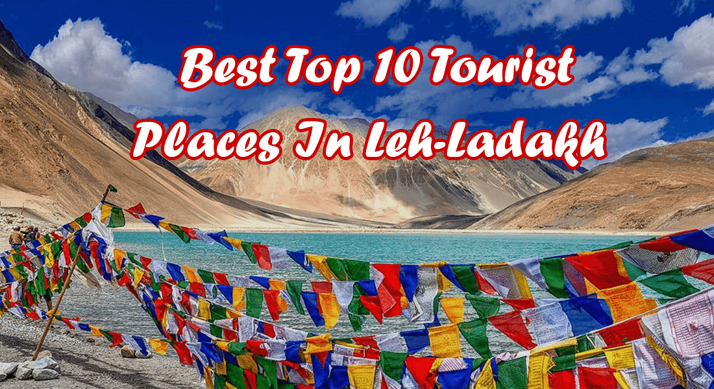

Kashmir |
.jpg) |
Majestic trees of Chinar, the Santoor’s mesmerizing sounds, and snow-capped Himalayas make Kashmir a paradise.
From the stunning vistas of Bhaderwah, picturesque landscapes of Baltal, to photographer’s nirvana like Shalimar
Garden and apple orchards of Pulwama, Kashmir is waiting to hypnotize you with its mesmerizing aura. All around
the globe, this small little quaint valley lying between the mountain range of Pir Panjal, and the Himalayan
Range is known for its pristine beauty and beautiful serenity.
You can soak infinite memories in a snug Kahwa teacup while enjoying its picture-perfect landscapes.
On the one hand, this place is filled with untouched wild terrain while on the other hand there are
apple orchards and grasslands of saffron waiting to bloom. Depending on the weather, scenic valleys
take the form of white ice sheets to luxuriant green valleys that add to the Kashmir tourism in multiple ways.
With the onset of an icy winter, places like Sonmarg get hidden under a snow blanket.
Hence, the location becomes one of the hotbeds for snow-related adventures that include sledding on glaciers,
ice-skating, and skiing. But, nothing beats this valley’s charm, especially during the summers, as you can undertake
a shikara ride, gondola ride, river rafting, and go trekking on popular trekking routes like the Bandipora trek,
Naranag-Gangabal trek, or Gangabal lake trek. Have you longed to witness the terraced gardens from the Mughal era,
the vast lake with lotus flowers on the fringes, and the phenomenal alpine vistas? There are some of the most striking
places to visit in Jammu & Kashmir that you must not miss out on this upcoming summer. So, make your bookings to feel
the sense of ease, and abundant peace that the “heaven on earth” has to offer. Read on to know about all that Kashmir
has in store for you.
|
Kerala to know more about Kerala Please check the below details |
 |
The state of Kerala is a secluded haven for the tourists that are seeking a retreat from the humdrum and hustle
bustle of a day-to-day life. The health-giving sea breezes of Arabian Sea forms the western boundary of the city.
The mountain ranges of Western Ghats set its eastern boundary. This narrow strip of land is also known as a “God’s own country.”
As a tourist, it can become an ideal destination for you because it offers a natural variety. For instance,
you can find a hill station in Wayanad then you can stay on houseboat inside the backwaters of Kerala and finally you can retire
on a beach to complete the circle. Tourist places in Kerala will give you an experience that will be etched in your memory forever.
During the last three decades, many factors came into action and helped this state to become a tourist friendly state.
For instance, this state has a hundred percent literacy rate, people are friendly with Queen's English and this factor
makes it an international tourist friendly state. Two decades ago, the state also witnessed a migration of educated people
to western countries. This international migration created a demand for international flights and interconnecting flights
as a result now Kerala is well connected with air facilities. The reverse migration of this workforce also created an environment
of investment in the state. This investment pattern also developed a distinct tourism infrastructure where you feel
the vernacular charms of this state under the amenities of big cities.
|
Kerala to know more about Kerala Please check the below details |

 |
Ladakh, located in the northernmost part of India, is a region known for its stunning landscapes, ancient monasteries,
and unique cultural heritage. Here are some popular tourist places to visit in Ladakh:
Leh: The capital city of Ladakh, Leh is the gateway to the region and a major tourist hub. Explore the Leh Palace,
Shanti Stupa, and the bustling Leh Market. You can also visit the nearby Shey Palace and Thiksey Monastery.
Nubra Valley: Located about 150 kilometers north of Leh, Nubra Valley is famous for its sand dunes, double-humped camels,
and picturesque villages. Visit Diskit Monastery and enjoy the breathtaking views from the Khardung La Pass, one of the
highest motorable passes in the world.
Pangong Tso Lake: This mesmerizing lake, situated at an altitude of about 4,350 meters, stretches across the Indo-China border.
Its pristine blue waters against the backdrop of barren mountains create a surreal landscape. The lake gained popularity after
being featured in the movie "3 Idiots."
Tso Moriri Lake: Another beautiful high-altitude lake, Tso Moriri is located in the Changthang region of Ladakh. It is known
for its tranquil surroundings and abundant birdlife. Take a walk along the shores and soak in the serenity of the lake.
Hemis Monastery: One of the most important monasteries in Ladakh, Hemis Monastery is known for its annual Hemis Festival,
which showcases traditional dances and mask performances. Explore the monastery's colorful frescoes, statues, and a vast
collection of ancient artifacts.
Lamayuru Monastery: Known as the "Moonland" due to its unique landscape, Lamayuru Monastery is one of the oldest monastic
establishments in Ladakh. Admire the monastery's beautiful architecture and enjoy panoramic views of the surrounding mountains.
Zanskar Valley: A remote and rugged region of Ladakh, Zanskar Valley offers breathtaking landscapes and opportunities for adventure.
Trekking enthusiasts can embark on the famous Chadar Trek, which involves walking on the frozen Zanskar River during winter.
Alchi Monastery: Located on the banks of the Indus River, Alchi Monastery is known for its ancient Buddhist art and architecture.
The monastery houses some of the finest examples of Kashmiri-style wall paintings and wooden sculptures.
Magnetic Hill: Situated on the Leh-Kargil-Srinagar highway, Magnetic Hill is a unique phenomenon where vehicles appear to defy gravity
and move uphill on their own. It's a popular tourist spot where you can experience this intriguing gravitational illusion.
Kargil: While technically not part of Ladakh but located in the neighboring region of Kargil, this town holds historical significance
as it was the site of the 1999 India-Pakistan conflict. Visit the Kargil War Memorial and pay homage to the brave soldiers who sacrificed their lives.
These are just a few of the many enchanting places to explore in Ladakh. Remember to acclimatize to the high altitude,
carry warm clothing, and respect the local culture and environment during your visit.
|